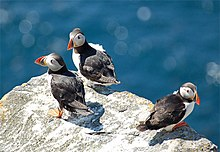

Swan
Swans are birds of the family Anatidae within the genus Cygnus.
Puffins
Puffins are any of three species of small alcids (auks) in the bird genus Fratercula with a brightly colored beak during the breeding season.
Parrot

Parrots, also known as psittacines /ˈsɪtəsaɪnz/,[1][2] are birds of the roughly 393 species in 92 genera comprising the order Psittaciformes, found mostly in tropical and subtropical regions.
Hummingbirds
Hummingbirds are birds native to the Americas and constituting the biological family Trochilidae. They are the smallest of birds, most species measuring 7.5–13 cm (3–5 in) in length.
House sparrow

The house sparrow (Passer domesticus) is a bird of the sparrow family Passeridae, found in most parts of the world. It is a small bird that has a typical length of 16 cm (6.3 in) and a mass of 24–39.5 g (0.85–1.39 oz). Females and young birds are coloured pale brown and grey, and males have brighter black, white, and brown markings.
Hairy Woodpecker
The hairy woodpecker (Leuconotopicus villosus) is a medium-sized woodpecker that is found over a large area of North America. It is approximately 250 mm (9.8 in) in length with a 380 mm (15 in) wingspan
The burrowing

The burrowing owl (Athene cunicularia) is a small, long-legged owl found throughout open landscapes of North and South America.
Kingfisher

Appearance (h2) The blue-breasted kingfisher (Halcyon malimbica) is a fairly large kingfisher (25cm high) with a distinctive blue breast from which it takes its name. You can also recognise it by its huge red and black bill.
Bald Eagle

The bald eagle (Haliaeetus leucocephalus) is a bird of prey found in North America. A sea eagle, it has two known subspecies and forms a species pair with the white-tailed eagle (Haliaeetus albicilla). Its range includes most of Canada and Alaska, all of the contiguous United States, and northern Mexico.